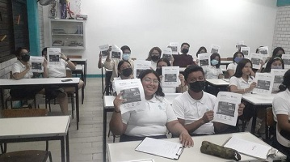

<!Doctype html>
<html lang="es">
    <head>
        <meta charset="utf-8">
        <link rel="stylesheet" href="estilos/modalidades.css">
    </head>
    <body>
        <aside id="barra">
            <h3 class="subtitulo">GENERAL</h3>
                <p class="texto">
                    El bachillerato general brinda una formación propedéutica que permite ir acercando a los estudiantes hacia sus estudios universitarios bajo una educación básica e integral con la que puedan desarrollar sus capacidades, conocimientos y habilidades;no ofrece una inserción al mundo laboral, sin embargo, su carácter propedéutico les da a los jóvenes un recorrido por las diferentes áreas de estudio como ciencias, matemáticas, deportes, informática, etc.<br>
                    Dentro de sus objetivos está el proporcionar los conocimientos, valores y actitudes que los estudiantes pueden aplicar en diferentes ámbitos para destacar su formación en distintas áreas.<br>
                    Esta modalidad es escolarizada es decir que su horario es de lunes a viernes de 7 de la mañana a 2 de la tarde para el turno matutino y de 2 a 9 de la tarde para el turno vespertino.<br><br>
                    
                </p>
            <h3 class="subtitulo">MODULAR</h3>
                <p class="texto">
                    Opción del Nivel Medio Superior mixta de estudios en la modalidad no escolarizada, flexible y económica. El Programa de Estudios está integrado por 22 módulos, que abarcan las diversas áreas del conocimiento y se estudia durante 2 años, los días sábados con la participación y garantía de la mediación docente.<br>
                    Es un sistema Abierto para Estudios de Bachillerato,el estudiante estudia de acuerdo al ritmo de avance y de aprendizaje y se ajusta a tu tiempo y necesidades.<br>
                    El certificado tiene validez oficial.<br>
                    Esta modalidad no es escolarizada, por lo tanto solo se dan o imparten las clases los dias sábados de 7 de la mañana a 2 de la tarde.<br><br>
                    
            </p>
        </aside>
    </body>
</html>